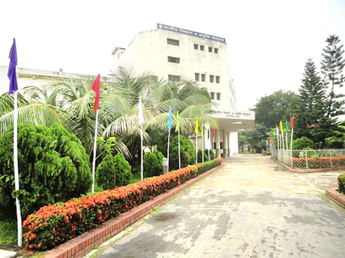

ঢাকা, সোমবার, 4 January 2019, ২৯ পৌষ ১৪২৫, ৫ জমাদিউল আউয়াল ১৪৪০ হিজরী
Online Edition

দেখে আসুন জাতীয় বিজ্ঞান ও প্রযুক্তি জাদুঘরদেখে আসুন জাতীয় বিজ্ঞান ও প্রযুক্তি জাদুঘর
প্রকাশিত: বৃহস্পতিবার ৩১ জানুয়ারি ২০১৯ | প্রিন্ট সংস্করণ

ইবরাহিম খলিল:
জাতীয় বিজ্ঞান ও প্রযুক্তি জাদুঘর ১৯৬৫ সালের ২৬ এপ্রিল তৎকালীন পাকিস্তান সরকার কর্তৃক ঢাকায় প্রতিষ্ঠিত হয়। বাংলাদেশের স্বাধীনতা যুদ্ধের পর এটি বিজ্ঞান ও প্রযুক্তি মন্ত্রণালয়ের আওতায় আসে।
২৬ এপ্রিল, ১৯৬৫ সালে পাকিস্তান সরকারের এক নির্বাহী আদেশের মাধ্যমে জাতীয় বিজ্ঞান ও প্রযুক্তি জাদুঘর আত্মপ্রকাশ করে। প্রতিষ্ঠার বছরের সেপ্টেম্বর মাস থেকে এটি ঢাকা গণগ্রন্থাগার ভবনে কাজ শুরু করে। ১৯৭০ সালের এপ্রিল মাসে এটিকে ঢাকার চামেলিবাগে স্থানান্তর করা হয় ও পরের বছরের মে মাসে এটিকে ধানমন্ডির ১ নং সড়কে স্থানান্তর করা হয়। ১৯৭২ সালে এটিকে জাতীয় জাদুঘরের মর্যাদা প্রদান করা হয় এবং বিজ্ঞান ও প্রযুক্তি মন্ত্রণালয়ের অধীনে এটি একটি স্বায়ত্তশাসিত প্রতিষ্ঠান হিসেবে কার্যক্রম শুরু করে। ১৯৭৯ সালে এটিকে ধানমন্ডির ৬নং সড়কে নেয়া হয় ও পরের বছর আবার এটিকে কাকরাইল মসজিদের সামনের একটি স্থানে স্থানান্তর করা হয়। জাদুঘরের একটি নিজস্ব ভবন নির্মাণের জন্য বাংলাদেশ সরকার ঢাকার আগারগাঁও, শেরে বাংলা নগরে ৫ একরের একখন্ড জমি বরাদ্দ করে এবং সেখানে ১৯৮১ সালে এর নিজস্ব ভবন তৈরির কাজ সম্পূর্ণ করে।
দেখার বিষয় (গ্যালারী) : জাতীয় বিজ্ঞান ও প্রযুক্তি জাদুঘরে ৭টি গ্যালারী রয়েছে। ভৌত বিজ্ঞান গ্যালারী, শিল্প প্রযুক্তি গ্যালারী জীব বিজ্ঞান গ্যালারী, তথ্য প্রযুক্তি গ্যালারী, মজার বিজ্ঞান গ্যালারী ১, মজার বিজ্ঞান গ্যালারী , মহাকাশ বিজ্ঞান গ্যালারী, কার্যক্রম : গ্যালারী প্রদর্শন শনিবার থেকে বুধবার সকাল ৯.০০টা থেকে বিকাল ৫.০০টা গ্যালারী প্রদর্শন করা যায়। শিক্ষা কার্যক্রম : নিয়মিতভাবে বিজ্ঞান ও প্রযুক্তির উপর বিভিন্ন সময়ে বক্তৃতার আয়োজন করা হয়। প্রকাশনা : নবীন বিজ্ঞানী, উদ্ভাবন জাতীয় বিজ্ঞান ও প্রযুক্তি সপ্তাহ: ১৯৭৮ সাল থেকে জাতীয় বিজ্ঞান ও প্রযুক্তি সপ্তাহ উদযাপিত হয়ে আসছে। জাতীয় বিজ্ঞান ও প্রযুক্তি সপ্তাহে প্রতিযোগিতা ও বিজ্ঞান মেলা আঞ্চলিক পর্যায়ে ও কেন্দ্রীয় পর্যায়ে অনুষ্ঠিত হয়।
২৬ এপ্রিল, ১৯৬৫ সালে পাকিস্তান সরকারের এক নির্বাহী আদেশের মাধ্যমে জাতীয় বিজ্ঞান ও প্রযুক্তি জাদুঘর আত্মপ্রকাশ করে। প্রতিষ্ঠার বছরের সেপ্টেম্বর মাস থেকে এটি ঢাকা গণগ্রন্থাগার ভবনে কাজ শুরু করে। ১৯৭০ সালের এপ্রিল মাসে এটিকে ঢাকার চামেলিবাগে স্থানান্তর করা হয় ও পরের বছরের মে মাসে এটিকে ধানমন্ডির ১ নং সড়কে স্থানান্তর করা হয়। ১৯৭২ সালে এটিকে জাতীয় জাদুঘরের মর্যাদা প্রদান করা হয় এবং বিজ্ঞান ও প্রযুক্তি মন্ত্রণালয়ের অধীনে এটি একটি স্বায়ত্তশাসিত প্রতিষ্ঠান হিসেবে কার্যক্রম শুরু করে। ১৯৭৯ সালে এটিকে ধানমন্ডির ৬নং সড়কে নেয়া হয় ও পরের বছর আবার এটিকে কাকরাইল মসজিদের সামনের একটি স্থানে স্থানান্তর করা হয়। জাদুঘরের একটি নিজস্ব ভবন নির্মাণের জন্য বাংলাদেশ সরকার ঢাকার আগারগাঁও, শেরে বাংলা নগরে ৫ একরের একখন্ড জমি বরাদ্দ করে এবং সেখানে ১৯৮১ সালে এর নিজস্ব ভবন তৈরির কাজ সম্পূর্ণ করে।
দেখার বিষয় (গ্যালারী) : জাতীয় বিজ্ঞান ও প্রযুক্তি জাদুঘরে ৭টি গ্যালারী রয়েছে। ভৌত বিজ্ঞান গ্যালারী, শিল্প প্রযুক্তি গ্যালারী জীব বিজ্ঞান গ্যালারী, তথ্য প্রযুক্তি গ্যালারী, মজার বিজ্ঞান গ্যালারী ১, মজার বিজ্ঞান গ্যালারী , মহাকাশ বিজ্ঞান গ্যালারী, কার্যক্রম : গ্যালারী প্রদর্শন শনিবার থেকে বুধবার সকাল ৯.০০টা থেকে বিকাল ৫.০০টা গ্যালারী প্রদর্শন করা যায়। শিক্ষা কার্যক্রম : নিয়মিতভাবে বিজ্ঞান ও প্রযুক্তির উপর বিভিন্ন সময়ে বক্তৃতার আয়োজন করা হয়। প্রকাশনা : নবীন বিজ্ঞানী, উদ্ভাবন জাতীয় বিজ্ঞান ও প্রযুক্তি সপ্তাহ: ১৯৭৮ সাল থেকে জাতীয় বিজ্ঞান ও প্রযুক্তি সপ্তাহ উদযাপিত হয়ে আসছে। জাতীয় বিজ্ঞান ও প্রযুক্তি সপ্তাহে প্রতিযোগিতা ও বিজ্ঞান মেলা আঞ্চলিক পর্যায়ে ও কেন্দ্রীয় পর্যায়ে অনুষ্ঠিত হয়।
২৬ এপ্রিল, ১৯৬৫ সালে পাকিস্তান সরকারের এক নির্বাহী আদেশের মাধ্যমে জাতীয় বিজ্ঞান ও প্রযুক্তি জাদুঘর আত্মপ্রকাশ করে। প্রতিষ্ঠার বছরের সেপ্টেম্বর মাস থেকে এটি ঢাকা গণগ্রন্থাগার ভবনে কাজ শুরু করে। ১৯৭০ সালের এপ্রিল মাসে এটিকে ঢাকার চামেলিবাগে স্থানান্তর করা হয় ও পরের বছরের মে মাসে এটিকে ধানমন্ডির ১ নং সড়কে স্থানান্তর করা হয়। ১৯৭২ সালে এটিকে জাতীয় জাদুঘরের মর্যাদা প্রদান করা হয় এবং বিজ্ঞান ও প্রযুক্তি মন্ত্রণালয়ের অধীনে এটি একটি স্বায়ত্তশাসিত প্রতিষ্ঠান হিসেবে কার্যক্রম শুরু করে। ১৯৭৯ সালে এটিকে ধানমন্ডির ৬নং সড়কে নেয়া হয় ও পরের বছর আবার এটিকে কাকরাইল মসজিদের সামনের একটি স্থানে স্থানান্তর করা হয়। জাদুঘরের একটি নিজস্ব ভবন নির্মাণের জন্য বাংলাদেশ সরকার ঢাকার আগারগাঁও, শেরে বাংলা নগরে ৫ একরের একখন্ড জমি বরাদ্দ করে এবং সেখানে ১৯৮১ সালে এর নিজস্ব ভবন তৈরির কাজ সম্পূর্ণ করে।
দেখার বিষয় (গ্যালারী) : জাতীয় বিজ্ঞান ও প্রযুক্তি জাদুঘরে ৭টি গ্যালারী রয়েছে। ভৌত বিজ্ঞান গ্যালারী, শিল্প প্রযুক্তি গ্যালারী জীব বিজ্ঞান গ্যালারী, তথ্য প্রযুক্তি গ্যালারী, মজার বিজ্ঞান গ্যালারী ১, মজার বিজ্ঞান গ্যালারী , মহাকাশ বিজ্ঞান গ্যালারী, কার্যক্রম : গ্যালারী প্রদর্শন শনিবার থেকে বুধবার সকাল ৯.০০টা থেকে বিকাল ৫.০০টা গ্যালারী প্রদর্শন করা যায়। শিক্ষা কার্যক্রম : নিয়মিতভাবে বিজ্ঞান ও প্রযুক্তির উপর বিভিন্ন সময়ে বক্তৃতার আয়োজন করা হয়। প্রকাশনা : নবীন বিজ্ঞানী, উদ্ভাবন জাতীয় বিজ্ঞান ও প্রযুক্তি সপ্তাহ: ১৯৭৮ সাল থেকে জাতীয় বিজ্ঞান ও প্রযুক্তি সপ্তাহ উদযাপিত হয়ে আসছে। জাতীয় বিজ্ঞান ও প্রযুক্তি সপ্তাহে প্রতিযোগিতা ও বিজ্ঞান মেলা আঞ্চলিক পর্যায়ে ও কেন্দ্রীয় পর্যায়ে অনুষ্ঠিত হয়।
২৬ এপ্রিল, ১৯৬৫ সালে পাকিস্তান সরকারের এক নির্বাহী আদেশের মাধ্যমে জাতীয় বিজ্ঞান ও প্রযুক্তি জাদুঘর আত্মপ্রকাশ করে। প্রতিষ্ঠার বছরের সেপ্টেম্বর মাস থেকে এটি ঢাকা গণগ্রন্থাগার ভবনে কাজ শুরু করে। ১৯৭০ সালের এপ্রিল মাসে এটিকে ঢাকার চামেলিবাগে স্থানান্তর করা হয় ও পরের বছরের মে মাসে এটিকে ধানমন্ডির ১ নং সড়কে স্থানান্তর করা হয়। ১৯৭২ সালে এটিকে জাতীয় জাদুঘরের মর্যাদা প্রদান করা হয় এবং বিজ্ঞান ও প্রযুক্তি মন্ত্রণালয়ের অধীনে এটি একটি স্বায়ত্তশাসিত প্রতিষ্ঠান হিসেবে কার্যক্রম শুরু করে। ১৯৭৯ সালে এটিকে ধানমন্ডির ৬নং সড়কে নেয়া হয় ও পরের বছর আবার এটিকে কাকরাইল মসজিদের সামনের একটি স্থানে স্থানান্তর করা হয়। জাদুঘরের একটি নিজস্ব ভবন নির্মাণের জন্য বাংলাদেশ সরকার ঢাকার আগারগাঁও, শেরে বাংলা নগরে ৫ একরের একখন্ড জমি বরাদ্দ করে এবং সেখানে ১৯৮১ সালে এর নিজস্ব ভবন তৈরির কাজ সম্পূর্ণ করে।
অনলাইন আপডেট
- 'চাকরি চেয়ে' বাংলাদেশ ব্যাংকের অর্থ যেভাবে সরিয়েছিল হ্যাকাররা৩১ জানুয়ারি ২০১৯
-
সৌদি যুবরাজকে জাতিসংঘ মহাসচিবের ফোন'
প্রকাশিত: বৃহস্পতিবার ৩১ জানুয়ারি ২০১৯ -
ভারতের রোহিঙ্গা লজ্জা
প্রকাশিত: বৃহস্পতিবার ৩১ জানুয়ারি ২০১৯ -
কোপার আগেই জাতীয় দলে মেসি!
প্রকাশিত: বৃহস্পতিবার ৩১ জানুয়ারি ২০১৯ - কুমিল্লা জেলায় লীড ব্যাংক হিসেবে ফার্স্ট সিকিউরিটি ইসলামী ব্যাংকের স্কুল ব্যাংকিং কনফারেন্স অনুষ্ঠিত ১২ জানুয়ারি ২০১৯ - ২০:২৩
- দেখে আসুন জাতীয় বিজ্ঞান ও প্রযুক্তি জাদুঘর ১২ জানুয়ারি ২০১৯ - ২০:২৩
- আজ থেকে আবার ঢাকায় ফিরছে বিপিএল বৃহস্পতিবার ৩১ জানুয়ারি ২০১৯ - ২০:২৩
- কম্পিউটার ঠিকঠাক রাখার উপায় বৃহস্পতিবার ৩১ জানুয়ারি ২০১৯ - ২০:২৩
- গবেষণা রিপোর্ট: মোবাইলের ব্যাটারী থেকে নির্গত গ্যাস শরীরের জন্য ক্ষতিকর বৃহস্পতিবার ৩১ জানুয়ারি ২০১৯ - ২০:২৩
- বিদেশিদের সার্টিফিকেট নিয়ে তামাশার নির্বাচনের লজ্জা ঢাকা যাবে না: সাকইফুল হক ১২ জানুয়ারি ২০১৯ - ২০:২৩
- চাঁদের উল্টো পিঠ থেকে ছবি পেতে শুরু করেছে চীন ১২ জানুয়ারি ২০১৯ - ২০:২৩
- সুবর্ণচর মানে সমগ্রদেশ বেঁচে থাকবার অধিকার ১২ জানুয়ারি ২০১৯ - ২০:২৩